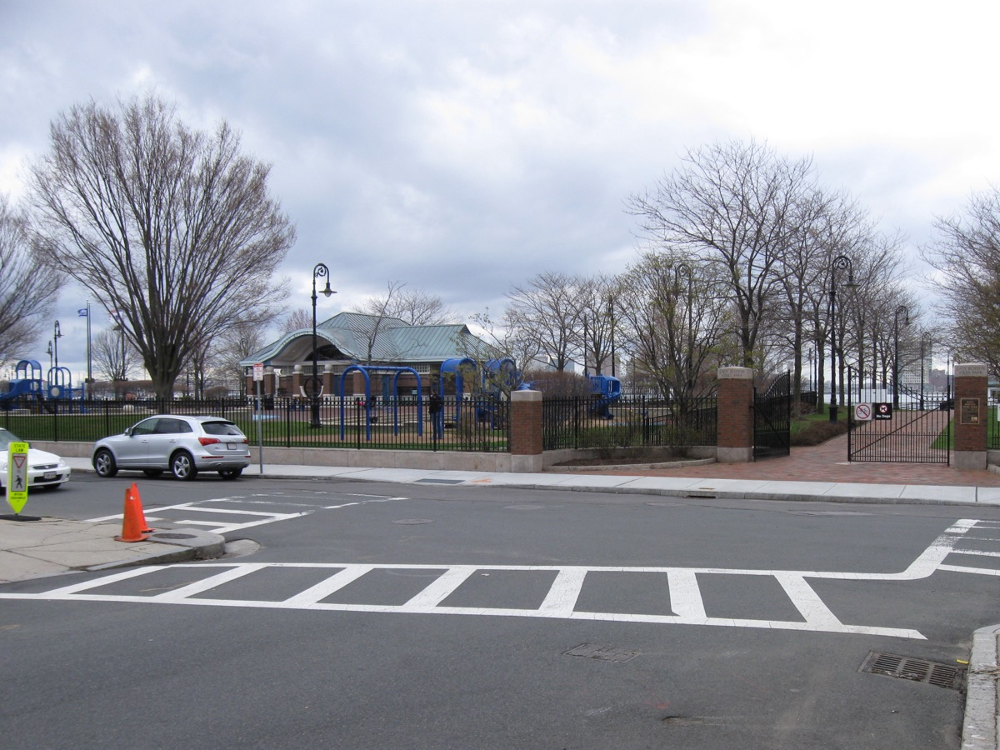
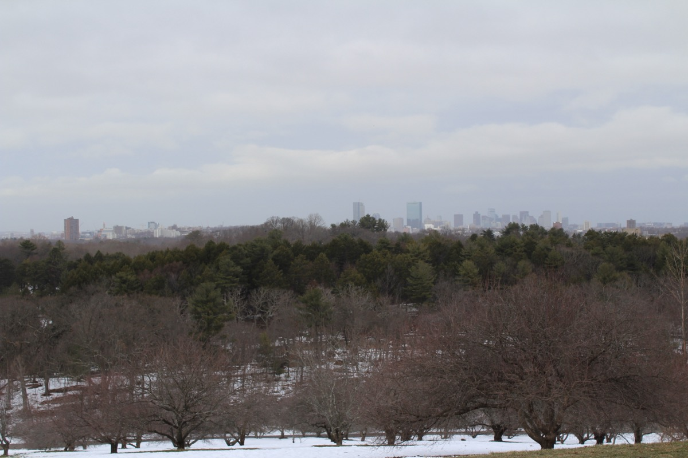
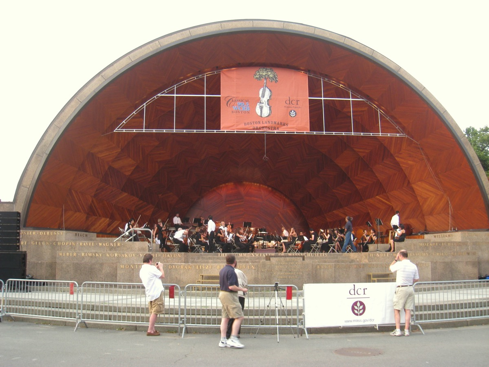
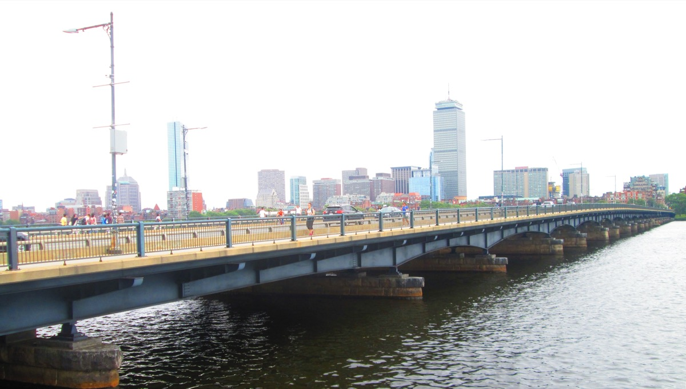

27 free things to do in Boston: sights, museum nights, waterfront walks, neighborhoods and nights out, each with address, T stop and hours. Where a site charges to go inside, we say so.
The short answer
The 10 best free things to do in Boston
01
The best free things to do in Boston
Walk the Freedom Trail

A red brick line linking 16 historic sites from Boston Common to the USS Constitution.
Watch the sunset from the Charles River Esplanade

Three miles of riverside park facing west, so it gets the sunset. Best spot: the Hatch Shell dock.
Visit the Boston Public Library and Bates Hall

Bates Hall, the 1895 reading room with green lamps, is open to anyone. See the Sargent murals upstairs too.
Boston Common, the Public Garden and the Ducklings

The oldest public park in the US, next to the Public Garden's lagoon, willows and Make Way for Ducklings statues.
Acorn Street and a walk through Beacon Hill

A cobblestone lane said to be the most photographed street in America, amid gas lamps and Charles Street antique shops.
02
Free museums in Boston (and when to go)
| Museum | When it's free | Nearest T stop |
|---|---|---|
| Harvard Art Museums | Every day, all hours | Harvard (Red) |
| ICA Boston | Thursdays 5–9pm | Courthouse (Silver Line) |
| Museum of Fine Arts | Wednesdays after 4pm, pay what you wish | Museum of Fine Arts (Green E) |
| Isabella Stewart Gardner | Your birthday; anyone named Isabella, always | Museum of Fine Arts (Green E) |
| MIT Museum | Last Sunday of the month | Kendall/MIT (Red) |
| USS Constitution Museum | Every day, donation suggested | North Station, then a 15-min walk |
| Boston Athenaeum, first floor | Free public floor, Tue–Sat | Park Street (Red/Green) |
ICA Boston on a free Thursday night

Contemporary art in a glass building over the harbor, with a fourth-floor gallery view of the water.
Harvard Yard and the Harvard Art Museums

Three museums under one glass roof, free since 2023. Add Harvard Yard and the Square's bookstores.
Museum of Fine Arts on a Wednesday evening

Pick one wing: Art of the Americas, the Japanese temple room, or the Egyptian galleries.
Full calendar at free museum days in Boston.
03
Free views, parks and waterfront walks
Walk the Boston Harborwalk

Runs from the ICA past Fan Pier and Long Wharf to the North End. Go at dusk for the harbor lights.
See the skyline from Piers Park in East Boston

The best free skyline view in Boston, straight across the harbor, one Blue Line stop away.
Castle Island and Fort Independence

A granite fort, a beach, a two-mile loop around Pleasure Bay and cheap hot dogs at Sullivan's.
Arnold Arboretum

281 acres, free daily. Peters Hill has a skyline view; Lilac Sunday in May is the one day picnics are allowed.
Bunker Hill Monument and the USS Constitution

Climb 294 steps for a harbor view, then board the USS Constitution nearby (bring photo ID).
Longfellow Bridge at night

Walk it after dark for the skyline reflected in the river. A 15-minute round trip.
More in the best views of Boston and the best parks in Boston.
04
Boston neighborhoods worth exploring on foot
The North End
Boston's Italian district, nearly 100 restaurants in half a square mile. More in our North End guide.
Faneuil Hall, Quincy Market and Haymarket

Free ranger talks in the Great Hall, street performers outside, and Haymarket's cheap produce a block away.
Harvard Square, Cambridge
Bookstores open until 11pm, street musicians, the Widener steps and the river five minutes south.
SoWa Open Market in the South End
200 vendors, a farmers market, food trucks and a vintage market in an old power station.
Back Bay and Newbury Street
Victorian brownstones, the Commonwealth Avenue Mall, and Newbury Street for window shopping.
All of them in Boston neighborhoods.
05
Free things to do in Boston at night
Free concerts and movies at the Hatch Shell

Landmarks Orchestra on Wednesdays, movies on Fridays, and the Pops Fourth of July fireworks. Come early.
The skyline from Fan Pier

Faces Downtown across Fort Point Channel. The best close-up of the lit skyline in the city.
Free trivia nights
Dozens of bars run free pub trivia most weeknights. Schedule in the best trivia nights in Boston.
Boston Common in December
Free music and fireworks at the tree lighting. Frog Pond skating charges; watching is free.
Walk the Harvard Bridge and count the Smoots

Marked in "Smoots," a unit MIT students invented in 1958. Ten minutes across with river views.
More in things to do in Boston at night.
06
Free things to do in Boston by season
| Season | Free highlights |
|---|---|
| Spring (Mar–May) | Lilac Sunday at the Arboretum, Esplanade cherry blossoms, Marathon spectating, SoWa opens in May. |
| Summer (Jun–Aug) | Hatch Shell concerts and movies, Fourth of July fireworks, North End feasts, Harborwalk sunsets. |
| Fall (Sep–Nov) | Foliage on the Esplanade and Commonwealth Ave Mall, Head of the Charles Regatta in October. |
| Winter (Dec–Feb) | Tree lighting on the Common, Copley Square lights, free museum nights, First Night on New Year's Eve. |
07
Getting around Boston for free (or close to it)
- Most of this list is walkable: Downtown to the North End is 10 minutes, Copley Square 20.
- The subway is $2.40 a ride; a 7-day pass is $22.50.
- Buses 23, 28 and 29 through Roxbury, Dorchester and Mattapan are fare-free.
- The Long Wharf to Charlestown ferry costs a subway fare and is the cheapest harbor cruise in town.
- Bluebikes is $2.95 a ride.
More in how to get around Boston and Boston without a car.
FAQ
Free things to do in Boston: common questions
What is the best free thing to do in Boston?
Walking the Freedom Trail: 2.5 miles, 16 historic sites, two to three hours.
Which Boston museums are free?
Harvard Art Museums, every day. The ICA, Thursdays 5–9pm. The MFA, pay-what-you-wish Wednesdays after 4pm. The MIT Museum, last Sunday of the month.
Is Boston walkable?
Yes. Downtown, the North End, Beacon Hill, Back Bay and the Seaport are all within a 40 minute walk.
Is there free public transit in Boston?
The subway is $2.40 a ride, but buses 23, 28 and 29 are fare-free. The Charlestown ferry from Long Wharf costs the same as the subway.
What can you do in Boston for free in winter?
The library, free museum nights, Faneuil Hall's Great Hall, and the Common tree lighting in December.